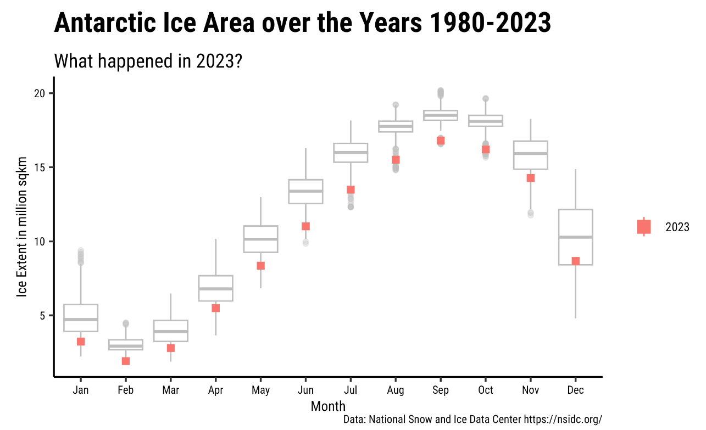
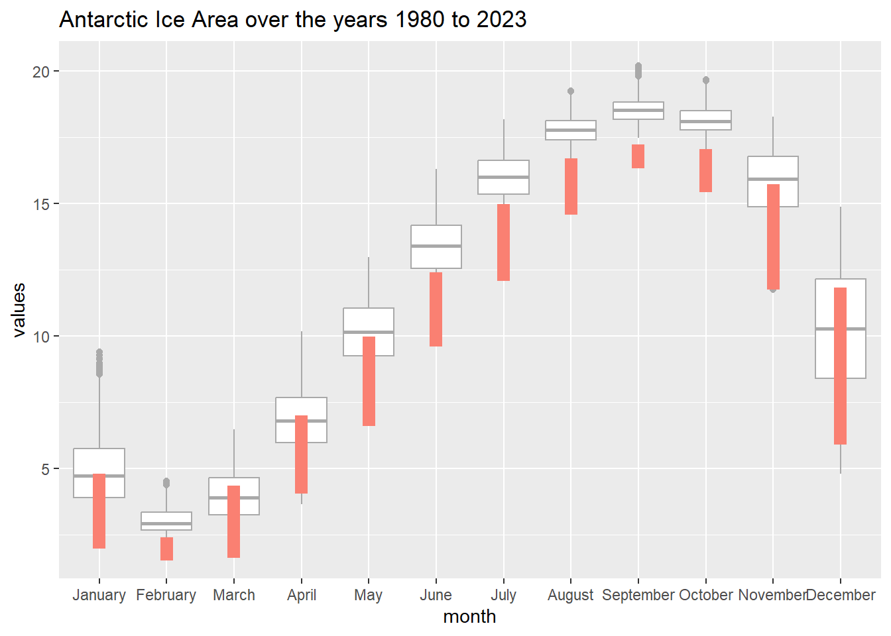
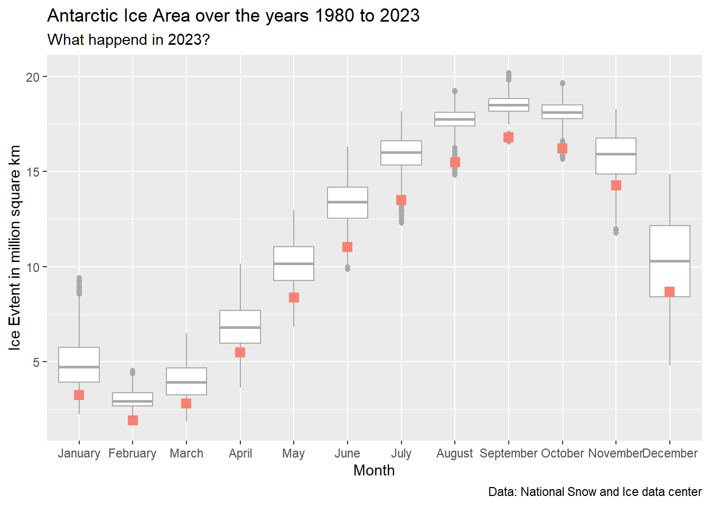

This data-set pertains to the extent of Antarctic Sea Ice over time that is monitored by the National Snow and Ice Data Center
library(tidyverse)
── Attaching core tidyverse packages ──────────────────────── tidyverse 2.0.0 ──
✔ dplyr 1.1.4 ✔ readr 2.1.5
✔ forcats 1.0.0 ✔ stringr 1.5.1
✔ ggplot2 3.5.1 ✔ tibble 3.2.1
✔ lubridate 1.9.3 ✔ tidyr 1.3.1
✔ purrr 1.0.2
── Conflicts ────────────────────────────────────────── tidyverse_conflicts() ──
✖ dplyr::filter() masks stats::filter()
✖ dplyr::lag() masks stats::lag()
ℹ Use the conflicted package (<http://conflicted.r-lib.org/>) to force all conflicts to become errors
library(mosaic)
Registered S3 method overwritten by 'mosaic':
method from
fortify.SpatialPolygonsDataFrame ggplot2
The 'mosaic' package masks several functions from core packages in order to add
additional features. The original behavior of these functions should not be affected by this.
Attaching package: 'mosaic'
The following object is masked from 'package:Matrix':
mean
The following objects are masked from 'package:dplyr':
count, do, tally
The following object is masked from 'package:purrr':
cross
The following object is masked from 'package:ggplot2':
stat
The following objects are masked from 'package:stats':
binom.test, cor, cor.test, cov, fivenum, IQR, median, prop.test,
quantile, sd, t.test, var
The following objects are masked from 'package:base':
max, mean, min, prod, range, sample, sum
library(skimr)
Attaching package: 'skimr'
The following object is masked from 'package:mosaic':
n_missing
# A tibble: 366 × 52
...1 ...2 `1978` `1979` `1980` `1981` `1982` `1983` `1984` `1985` `1986`
<chr> <dbl> <dbl> <dbl> <dbl> <dbl> <dbl> <dbl> <dbl> <dbl> <dbl>
1 January 1 NA NA 5.97 6.32 NA 6.51 NA NA 7.72
2 <NA> 2 NA 6.94 NA NA 7.04 NA 6.94 6.53 NA
3 <NA> 3 NA NA 5.67 5.79 NA 6.17 NA NA 7.57
4 <NA> 4 NA 6.84 NA NA 6.69 NA 6.65 6.06 NA
5 <NA> 5 NA NA 5.58 5.35 NA 5.87 NA NA 7.24
6 <NA> 6 NA 6.64 NA NA 6.39 NA 6.30 5.66 NA
7 <NA> 7 NA NA 5.33 5.19 NA 5.66 NA NA 6.81
8 <NA> 8 NA 6.27 NA NA 6.08 NA 5.94 5.31 NA
9 <NA> 9 NA NA 5 4.78 NA 5.30 NA NA 6.28
10 <NA> 10 NA 6.14 NA NA 5.86 NA 5.63 4.93 NA
# ℹ 356 more rows
# ℹ 41 more variables: `1987` <dbl>, `1988` <dbl>, `1989` <dbl>, `1990` <dbl>,
# `1991` <dbl>, `1992` <dbl>, `1993` <dbl>, `1994` <dbl>, `1995` <dbl>,
# `1996` <dbl>, `1997` <dbl>, `1998` <dbl>, `1999` <dbl>, `2000` <dbl>,
# `2001` <dbl>, `2002` <dbl>, `2003` <dbl>, `2004` <dbl>, `2005` <dbl>,
# `2006` <dbl>, `2007` <dbl>, `2008` <dbl>, `2009` <dbl>, `2010` <dbl>,
# `2011` <dbl>, `2012` <dbl>, `2013` <dbl>, `2014` <dbl>, `2015` <dbl>, …
Observations (list of imperfections):
There is no data collected for 1978. For the next 9 years (till 1987), data has been entered every alternate day. Fom the mid of 1987, data has been entered every day but there by end ( from december 3rd) there is missing data till the end of that year.
On 1988- there is no data for the first few days of the week- first 12 days of January.
What am i supposed to do with the data on Feb 29 only every 4 years?
The month was only entered for the 1st day of every month, Making the value of every other data entry of each month NA
Data Dictionary:
Variable name
Description
Type of variable
..1
Refers to the month the data was collected in
Qualitative
..2
Refers to date of the month the data was collected in
Qualitative
Year (1978, 1979 … 2027)
Sea Ice Extent - the total area covered by sea ice, often measured in square kilometers based on the year, month and day
Quantitative
1981-2010 mean
This variable represents the average value for sea ice extent calculated over the 30-year period from 1981 to 2010.
Quantitative
1981-2010 median
This variable represents the median value for sea ice extent calculated over the 30-year period from 1981 to 2010.
Quantitative
Target and Predictor Variables:
Target variable could be daily sea ice levels across multiple years.
Predictor Variables:
Year: Trends over time can have a major impact on sea ice due to climate change.
Month: Sea ice varies seasonally, so the month is a key predictor.
Day: In daily data, day-to-day variations can be tracked.
Defining the Research Experiment:
It could have been aimed at monitoring, measuring, and understanding changes in Antarctic sea ice over time. In order to do this, extensive data on sea ice coverage and its fluctuations have been collected over the span of many years.This would be used to identify trends in sea ice extent over the long-term (year-to-year trends) and short-term (daily or seasonal fluctuations).
Use: Understanding the trend in Antarctic sea ice can provide critical insight into global climate change and its effects on the polar regions.
Questions:
How has the Antarctic sea ice extent changed from 1978 to the present day?
Are there significant seasonal differences in sea ice over decades?
Has the extent of Antarctic sea ice significantly reduced over the past 40 years due to rising global temperatures?
Graph:

Type of graph: A box plot.
Defining the question:
What happened to Antarctic sea ice extent in 2023 compared to historical data from 1980 to 2022?
How did the Antarctic ice extent in 2023 differ from the historical norms?
Analyzing the data:
Types of Variables: quantitative variables representing the ice extent that are stored unter mutiple columns seperated by the year the time they were collected in. Similar to my last case study, i need all the quantiative data i should plot in one column and so i creat a new data-set where a new row called series is created where the year is stored and the ice extent value under is stored in well… values.
# A tibble: 16,836 × 4
month day series values
<ord> <dbl> <int> <dbl>
1 January 1 1979 NA
2 January 1 1980 5.97
3 January 1 1981 6.32
4 January 1 1982 NA
5 January 1 1983 6.51
6 January 1 1984 NA
7 January 1 1985 NA
8 January 1 1986 7.72
9 January 1 1987 NA
10 January 1 1988 NA
# ℹ 16,826 more rows
Replicating the graph:
ice_prepared %>%filter(is.finite(values)) %>%gf_boxplot(values ~ month, color ="darkgrey") %>%gf_point(values ~ month, data =subset(ice_prepared, series ==2023), color ="salmon", size =3, shape =15) %>%gf_labs(title ="Antarctic Ice Area over the years 1980 to 2023")
Warning: Removed 1 row containing missing values or values outside the scale range
(`geom_point()`).

Here, all values of the year 2023 are being plotted across the month they are inputted in. Can i put only the average value of ice extent each month?
# A tibble: 12 × 2
month avg_value
<ord> <dbl>
1 January 3.23
2 February 1.91
3 March 2.80
4 April 5.49
5 May 8.36
6 June 11.0
7 July 13.5
8 August 15.5
9 September 16.8
10 October 16.2
11 November 14.3
12 December 8.67
ice_prepared %>%filter(is.finite(values)) %>%gf_boxplot(values ~ month, color ="darkgrey") %>%gf_point(data = ice_avg_2023, avg_value ~ month, color ="salmon", size =3, shape =15) %>%gf_labs(title ="Antarctic Ice Area over the years 1980 to 2023", subtitle ="What happend in 2023?", x ="Month", y ="Ice Evtent in million square km", caption ="Data: National Snow and Ice data center")

Observations:
There is a seasonal pattern in the Antarctic ice extent, with ice reaching its maximum around September and its minimum around February . This pattern seems to be consistent with the natural annual cycle of ice melting and formation in the region.
For all months, the ice extent in 2023 is lower than the historical median. June through October seems to have it being far more lower than the median compared to the other months.